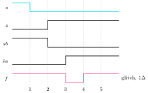

Definition
A timing diagram plots every node against time, with two levels only. Without delays it checks the function; with delays it shows the transient. Procedure (event-driven, as a simulator does):
- inputs constant for ; compute every node at (steady state);
- move to the earliest time at which some signal changes (an event);
- re-evaluate the gates fed by that signal and schedule their output changes after their delay;
- repeat until no events remain.
Delay from input to output depends on the path: through a 2-to-1 mux a change on  takes , one on
takes , one on  takes (inverter + AND + OR).
Hazard (alea, glitch): a short spurious pulse during the transient. Static-1: output should stay 1 and drops; static-0: should stay 0 and rises; dynamic: should change once and changes three times.
takes (inverter + AND + OR).
Hazard (alea, glitch): a short spurious pulse during the transient. Static-1: output should stay 1 and drops; static-0: should stay 0 and rises; dynamic: should change once and changes three times.
Picture

, falls at  , every gate has delay :
, every gate has delay :  dies at 2,
dies at 2,  is born only at 3, so
is born only at 3, so  drops from 3 to 4.
drops from 3 to 4.
Example
2-to-1 mux, ; map rows , columns  :
:
| s/ab | 00 | 01 | 11 | 10 |
|---|---|---|---|---|
| 0 | 0 | 0 | 1 | 1 |
| 1 | 0 | 1 | 1 | 0 |
With and switching, the input point moves between cells and : both ones, adjacent, but in different groups (, ). The fix is the bridging (consensus) implicant : stays 1 through the transition because does not depend on . The transition does not glitch with these delays ( rises after , falls after ), but a hazard-free design must cover both directions.
Rule: an SOP is free of static-1 hazards for single-input changes iff every pair of adjacent ones is covered by a common implicant. Dually, static-0 hazards in a POS are removed by covering adjacent zeros together.
Intuition
Two implicants hand the output over like runners passing a baton; if the first lets go before the second grabs, the baton falls. The consensus term is a third runner holding it during the handover.
Pitfall
In a synchronous circuit glitches on combinational nodes are harmless for function: an edge-triggered flip-flop samples only at the edge, after the transient — they cost power. They matter where a signal is used as a clock, an asynchronous reset or in an asynchronous sequential circuit. Hazards caused by several inputs changing together cannot all be removed by adding terms: in an adder the carry chain makes them unavoidable.